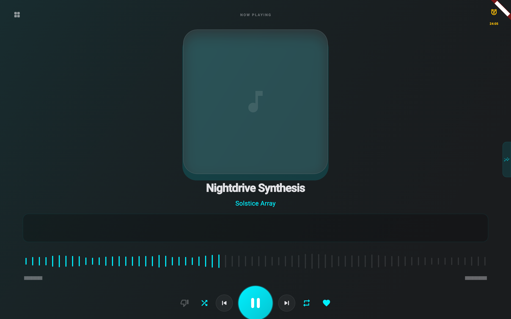
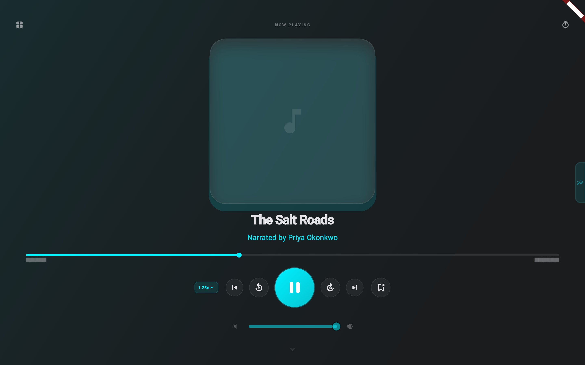
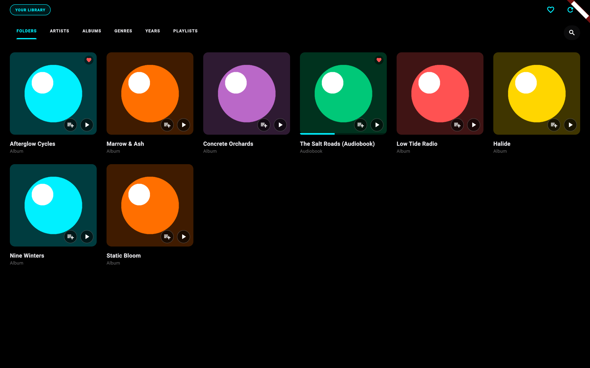
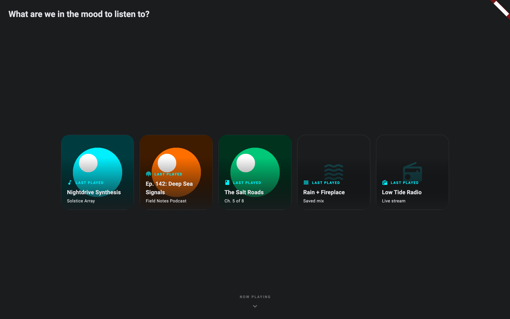
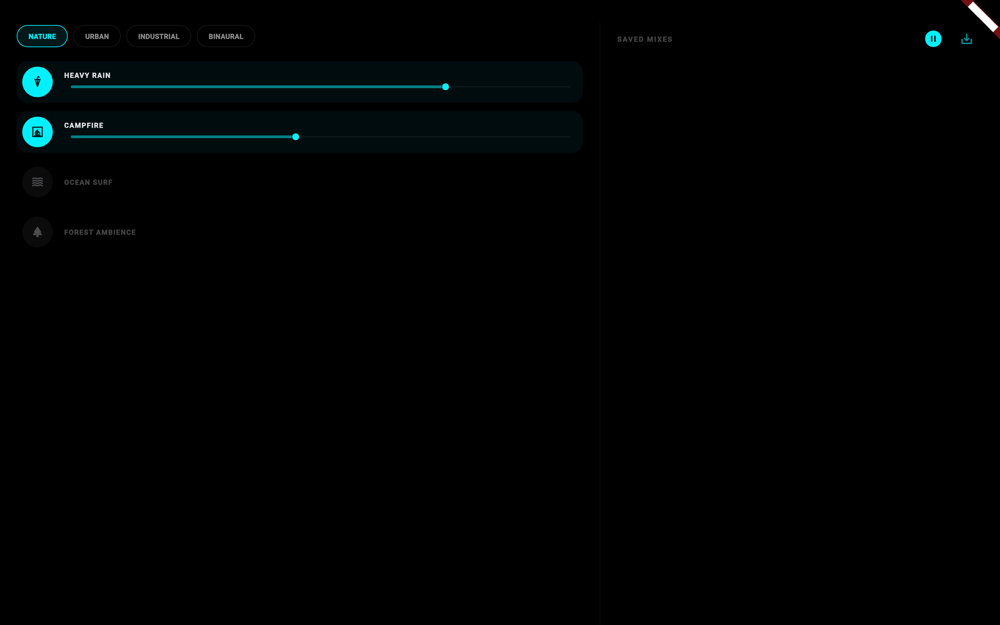

PROJECT CONTEXT
AULOS
FLUTTERDARTJUST_AUDIODRIFT
A high-performance, offline-first local audio player designed for focus and architectural elegance. It serves as a unified hub for Music, Podcasts, Audiobooks, and Radio.
CORE PHILOSOPHY
Built with "Overengineered" quality at its heart, Aulos features a completely decoupled architecture where the Domain layer depends on nothing.
SYSTEM ARCHITECTURE
Presentation Layer (Flutter) ↓ observes Domain Layer (Pure Dart) ↑ implemented by Data Layer (Drift / Services)
KEY CAPABILITIES
• Strategy-Pattern Playback: Contextual UI and controls that adapt automatically to the media type.
• Aesthetic Systems: Winamp-style frequency visualizers and custom-painted waveform seekbars.
• Hardened Resilience: Native thread-safety guarding for Windows (WinRT) and async disposal protection.
# Feature Tracker
INTERFACE





PROJECT TIMELINE
2026-06-15
LibriVox Storefront: Public domain audiobook discovery with live streaming and download-to-local capabilities.
2026-06-13
Local Music Library: High-performance filesystem indexing with metadata and artwork extraction.
2026-06-13
Podcast Discovery Suite: Full RSS-based browser with trending categories, show notes (HTML), and timestamp seeking.
2026-06-13
Internet Radio Suite: Worldwide station browser with live metadata (codec, bitrate) and "Add to Library" support.
2026-06-13
Adaptive Now Playing UI: Contextual controls that change based on media type (e.g., skip-10s for podcasts vs. next-track for music).
2026-06-13
Aesthetic Systems: Winamp-style frequency visualizers and zero-CPU track-specific waveform seekbars.
2026-06-13
Responsive Layouts: Mobile-to-Desktop adaptive views including compact/overlay modes for small viewports.
2026-06-12
Hardened Database Architecture: Modularized Drift databases for isolated storage of music, audiobooks, and radio data.
2026-06-11
Universal Media Support: Unified playback strategies for Music, Podcasts, Audiobooks, Radio, and Noise.
2026-06-06
Cross-Device Sync: Secure cryptographic handshake and discovery services for host/client role-agnostic logic.
UPCOMING
Jamendo Music Integration: High-quality royalty-free music streaming and discovery (Core implemented, UI currently parked).
UPCOMING
Advanced Smart Playlists: Rule-based automated queue generation (ratings and metadata-driven).
UPCOMING
Deep Metadata Enrichment: Extended integration with MusicBrainz and Wikimedia for rich artist biographies and high-res covers.
UPCOMING
Wikipedia Knowledge Integration: Structured information display for artists, authors, podcast hosts/guests, and radio station history.
UPCOMING